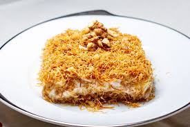

Muhallebili Kadayıf Tatlısı
Malzemeler
300-350 g kadar tel kadayıf
3 yemek kaşığı tereyağı
5 yemek kaşığı toz şeker
1,5 su bardağı dövülmüş ceviz
Muhallebisi için:
1 litre süt
4 yemek kaşığı un
3 yemek kaşığı mısır nişastası
1 su bardağı toz şeker
1 paket vanilya
1 adet yumurta sarısı
1 paket sıvı krema (200ml)
Hazırlanışı
Kadayıfı kavurarak muhallebili kadayıf tatlısının yapımına başlayalım. Kadayıfı ince ince kırın (kolay kırılması için 2 saat kadar derin dondurucuda bekletebilirsiniz).
Teflon tencereye ya da genişçe bir teflon tavada tereyağını eritin ve şekeri, kadayıfı ekleyerek pembeleşinceye kadar kavurun.
Son olarak cevizi ilave edin ve bir süre daha kavurup ocaktan alın. (Kadayıfları ocaktan aldıktan sonra tencerede bırakırsanız kızarmaya devam edecektir o nedenle ya karıştırmaya devam edin ya da bir kaba alarak soğumasını sağlayın)
Tatlımızın muhallebisini hazırlayalım. Krema ve vanilya hariç tüm malzemeleri tencereye alarak karıştırarak pişirin.
Muhallebi kaynadıktan 3 dakika kadar sonra ocaktan alarak 10-15 dk. soğumaya bırakın.
Daha sonra vanilya ve sıvı kremayı ilave edin ve mikser yardımı ile pürüzsüz bir görüntü alana kadar 4-5 dakika boyunca çırpın.
Hazırladığımız krema ve kadayıfı tepsiye yerleştirelim. Yaklaşık 30cm çapında bir borcama kızartmış olduğunuz kadayıfların yarısını dökün ve borcamın tabanına güzelce yayın.
Üzerine hazırladığınız kremayı dökün ve en üste kalan kadayıfları serin. Bu işlem için kelepçeli kalıp da kullanabilirsiniz.
Tatlımızı soğumaya bırakalım. Tatlı oda ısısında ılındıktan sonra buzdolabına kaldırın.
Buzdolabından 3-4 saat kadar dinlendirin.
Dilimledikten sonra servis edebilirsiniz. Afiyet olsun.